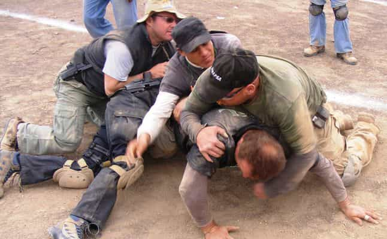
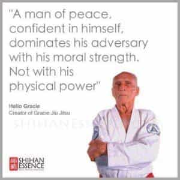
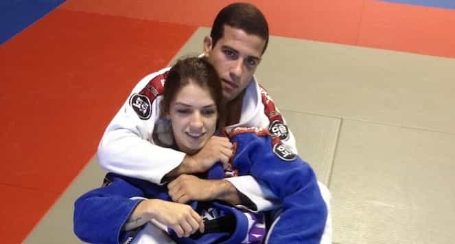
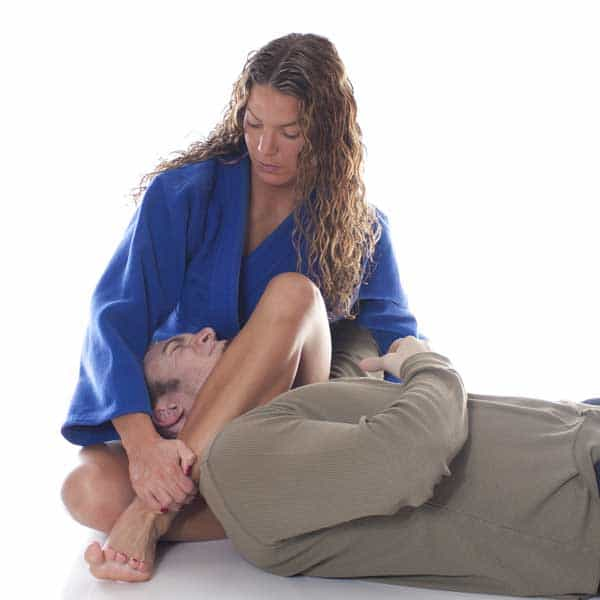

Sometimes, we can fall into the trap of one-track thinking.
Okay so I will meditate in the morning for an hour before going out and approaching at least 20 girls, then lifting later. Tomorrow I will do it again.
It’s easy to have a laundry list of things that you have to do and can only use for one specific purpose—like having 50 tools for 50 things. Why not have a few tools for the same 50 things? As you go on in your journey of improvement, you will find ways to streamline your tools to achieve the same results and beyond. Allow me to present an excellent tool for any man trying to become a casanova: Brazilian Jiu Jitsu
1. Increases confidence

On the mats, you are forced to concede defeat to other men (and sometimes women if they’re really good). Normally, you will be training in front of most of the class, too. Failing in front of a crowd can be painful, especially if you partake in a tournament. The constant beating you will receive does its part in destroying embarrassment.
Always be pushing the envelope and chasing discomfort through new classes, tournaments, and better opponents. Becoming proficient at anything boosts a man’s confidence. Once you break through that beginner’s rut, you will submit one person, then two, then ten, and looking back on how far you came from your first miserable day will make you proud. The thrill of conquest in your bones will make it much easier to apply the same frame to gaming girls.
2. Doubles as self defense training

Over 90% of street fights go to the ground, and grappling will teach you how to manage, diffuse, or outright destroy your opponent. BJJ is only grappling, which means that there is no punches, kicks, or any form of striking. Knowing how to make an opponent helpless without throwing a single punch is both rewarding and incredibly practical. Of course in an actual fight you will be striking, but the BJJ training will give you a huge leg up over anyone who you might get into a fight with.
3. Trains the mind to relax in uncomfortable situations

When you first start out in BJJ, you will be burning energy and sweating up a storm like you never have before. You will think aggressive tactics is all you need to win at BJJ. You will go into each match at 110% and burn all the gas in the tank.
Off the mats, your mind will be occupied with thoughts of times you tapped out, times where you missed an opportunity, and have regrets over what you did not do. Losing in BJJ and reacting with anger and frustration is the fastest way to quitting or never improving. The same mindset applies to game.
Over time you will expend less energy and focus more on technique. Your mind and body become synergistically connected and you flow more—rather than being tense and hyperreactive all the time. Eventually you will develop a state of zen when grappling. You focus less on breathing and become in tune with your surroundings. This “zen” is simply the mind reaching homeostasis.
Conditioning the mind like this can be done through meditation and rhythmic hobbies, but BJJ does that too. Capturing the essence of when you hit your zen mode is how you apply it to all other areas of life—game included. BJJ forces you to be in the moment and flow with your competition while trying to get an edge to beat it. Like chess, you can think ten moves ahead, but what happens now (her shit testing, your opponent making a move) determines how you will flow with it. Getting tapped out (rejection) phases you less and less after hyper exposure.
4. You meet tight, fit girls at tournaments
The girls you will meet when doing BJJ are some of the best aesthetically. Getting muscular does not go hand in hand with grappling, so girls that do it are fit and lean, instead of trying to look like a man. They have tight, firm asses, toned legs, and pert tits.
Some sports have a bell curve with a higher proportion of more ugly females (*cough* crew), but BJJ girls have not disappointed me so far, save for very few outliers. BJJ as a discipline is attractive to women because there is no violent striking, and women can compete with anyone without getting seriously hurt.
5. Breaks the touch barrier

BJJ requires you to get close and personal with your partner. Not once have I thought of two men grappling as being gay, but I have seen grappling with girls as having sexual undertones at times. We all know women think about sex a lot more than men, but when these girls are rolling around with a lot of sweaty guys emanating hormones left and right—you get tingle paradise.
Going to tournaments and other classes, you can run game on any girl that you roll with, and it is extremely easy to break the touch barrier and get physical with her when you work up more tingles using your tight game. Rolling with girls while having other girls see you also sets off a biological signal in her head whether she thinks it or not. Seeing you dominating another girl makes her think about sex 10/10 times. Thus, it is easier to open other girls after practicing on a few.
I have personally netted great results from being “that guy that charismatically submits the girls” at both different gyms and competitions. One thing though, if you have a gym or two that you call your home, then don’t shit where you eat. 99% of the regulars at these gyms are close knit, and if you aggressively pursue the girls at your gym, whether you fail or not, can lead to a less than favorable training environment for you.
Don’t nuke potential bonds with fellow grapplers at your gym for one piece of pussy. You can be more sexually aggressive outside your home gym(s) and competitions. Game at your home gym should be after she shows IOI. Don’t let your desire for pussy supercede your desire to become a great grappler.
6. Teaching dates to grapple leads to sex

You will look like a wrestling god in front of a girl who has zero experience in the sport. Make sure to let her know during your interaction that you grapple. Make it interesting, and work it into your LMR smashing tactics, or as a way of easing into sex. If you get her to agree to learning some “important self defense tips,” then the foot is already in the door. She may not see it as sexual first, but getting heated and rolling around with your bodies rubbing close to each other creating friction will get any girl’s motor running for sure.
Conclusion
Your focus should be on your training first and foremost. The point of this article is that BJJ naturally remedies some issues facing many men today who are learning game. If you do end up joining just for the “poon gainz,” then my advice to you is to stick with it for at least a year.
Over time, you will highly enjoy getting on the mats and rolling with your classmates. You will sign up for tournaments because you want to win. There is a commonly held belief in the manosphere that says if you foster an attractive, healthy, and interesting lifestyle, women are more inclined to come to you. That is the raw honest truth when taking up BJJ. You will have so much to talk about, a hobby that trains your body, and an excuse to give girls a “demonstration.”
Read Next: 5 Things I Learned About Life From Brazilian Jiu Jitsu